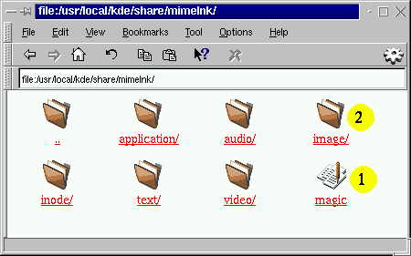
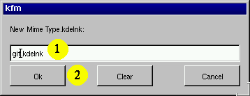
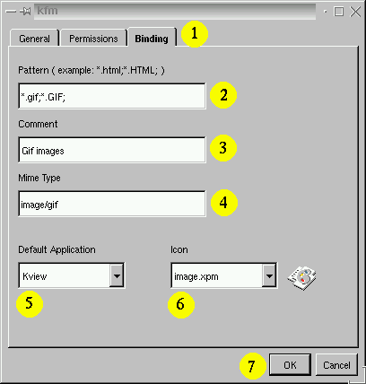

Installing new mime types step by step
This chapter could be named installing mime types for
dummies since it comes with many nice pictures :-).
In the following we want to see how I installed the image/gif
mime type. You dont need to reproduce these steps, since this mime type
is already installed. After reading this chapter and after having a look
at all the images you should know how to install new ones.
The black numbers on yellow circels in the images correspond
to the numbered list under the image.
Open a KFM window
On your desktop you will find icons like these:
Click once with the left mouse button on Templates.
Have a look at the files in this directory, you will
remember them later in this chapter. Now open the
menu Edit and choose Data types.
Now you will see something like this:

- This is the magic file we talked about before. You should have
a look at it later, but dont, worry, no need to understand it.
- The folder containing the image/gif mime type file.
Click on this folder with the left mouse button to open it.
Creating a new mime type file
Open the menu File and select New. You may
have notice by now that the names in this popup menu correspond to the
names in the tamplates folder. This menu gives you quick access to the
templates. You can have the same effect by opening the templates folder
and doing drag and drop. Now select Mime Type. A window like
this one will popup:

- Enter the name of the file here. Please dont delete the
.kdelnk extension. You should notice here that the
name of the file is only the second part of the mime types name.
The first part is coverd by the directory you move the file in.
The name of the file and the subdirectory you put it in does not
really matter, it just needs to be in $KDEDIR/share/mimelnk.
- Now press the OK button and the new icon will appear in the
KFM window.
Opening the properties dialog
Now press the right mouse button over the new icon and select
Properties from the popup menu. A dialog appears:

- Select the tab called Binding.
- Enter some patterns that usually match files of this
data type. If you have multiple patterns, then you must separate
them with a ;
- Enter a descriptive text here. If your language is
supported, you will notice that the description is in your
native language. KFM can store multiple descriptions, one for
each language. If you enter something here then it will be stored
under your language. Application developers should make shure
that at least a english description is available. How to do this
was discussed one chapter before in the hackers section.
- Enter the full name of the mime type.
- You can select a default application here. This is of interest
if multiple applications regsitered for the same mime type. If you
click on such a data type file KFM makes a guess which app to use.
By choosing a default app you can keep KFM away from guessing.
- Select a icon. All icons are stored in $KDEDIR/share/icons.
For every icon in this directory there exists a icon of the same name
but half size in $KDEDIR/share/icons/mini. Usual icons have
the size 32x32 and the mini icons 16x16.
- Press the OK button.
Now KFM rescans all opened directories because the icons and stuff
could have changed. You can force KFM manually to do so by
choosing Rescan Bindings in the View menu.
Your mime type is now registered and KFM should know about it.
Congratulations, you survived this lesson. Time for a break now
:-)